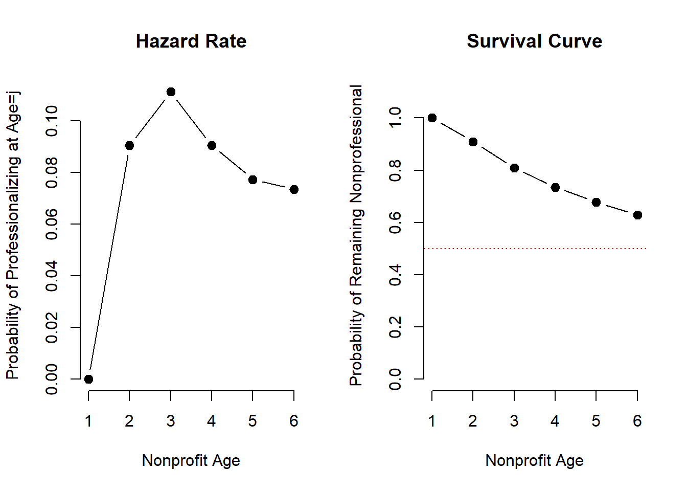

library( foreign )
library( memisc )
library( knitr )
library( dplyr )
library( xtable )
library( stargazer )
library( broom )
library( pander )dat <- readRDS( "./Data/CompleteHazardSpells.rds" )
# lapply( dat, class )
#
# head( dat, 25 ) %>% pander
nrow( dat )## [1] 22026m.01.01 <- glm( formula= prof ~ AGE, data=dat, family=binomial("logit") )
m.01.02 <- glm( formula= prof ~ AGE + Age2, data=dat, family=binomial("logit") )
m.01.03 <- glm( formula= prof ~ AGE + Age2 + Age3, data=dat, family=binomial("logit") )
m.01.04 <- glm( formula= prof ~ AGE + Age2 + Age3 + Age4 + Age5, data=dat, family=binomial("logit") )
m.01.01 %>% tidy %>% kable( digits=3 )| term | estimate | std.error | statistic | p.value |
|---|---|---|---|---|
| (Intercept) | -2.351 | 0.052 | -45.174 | 0 |
| AGE | 0.079 | 0.013 | 5.955 | 0 |
m.01.02 %>% tidy %>% kable( digits=3 )| term | estimate | std.error | statistic | p.value |
|---|---|---|---|---|
| (Intercept) | -4.449 | 0.134 | -33.083 | 0 |
| AGE | 1.483 | 0.079 | 18.861 | 0 |
| Age2 | -0.195 | 0.011 | -18.329 | 0 |
m.01.03 %>% tidy %>% kable( digits=3 )| term | estimate | std.error | statistic | p.value |
|---|---|---|---|---|
| (Intercept) | -9.657 | 0.409 | -23.636 | 0 |
| AGE | 6.820 | 0.372 | 18.325 | 0 |
| Age2 | -1.801 | 0.105 | -17.112 | 0 |
| Age3 | 0.146 | 0.009 | 15.765 | 0 |
m.01.04 %>% tidy %>% kable( digits=3 )| term | estimate | std.error | statistic | p.value |
|---|---|---|---|---|
| (Intercept) | -98.285 | 716.190 | -0.137 | 0.891 |
| AGE | 137.309 | 1038.478 | 0.132 | 0.895 |
| Age2 | -74.921 | 576.934 | -0.130 | 0.897 |
| Age3 | 19.722 | 154.181 | 0.128 | 0.898 |
| Age4 | -2.516 | 19.894 | -0.126 | 0.899 |
| Age5 | 0.125 | 0.995 | 0.125 | 0.900 |
par( mfrow=c(2,2) )
plot( dat$AGE , m.01.01$fitted.values, pch=19, cex=2, bty="n" )
plot( dat$AGE , m.01.02$fitted.values, pch=19, cex=2, bty="n" )
plot( dat$AGE , m.01.03$fitted.values, pch=19, cex=2, bty="n" )
plot( dat$AGE , m.01.04$fitted.values, pch=19, cex=2, bty="n" )m.02 <- glm( formula= prof ~ D1 + D2 + D3 + D4 + D5 + D6 - 1, data=dat, family=binomial("logit") )
m.02 %>% tidy %>% kable( digits=3 )| term | estimate | std.error | statistic | p.value |
|---|---|---|---|---|
| D1 | -18.566 | 119.365 | -0.156 | 0.876 |
| D2 | -1.839 | 0.043 | -42.385 | 0.000 |
| D3 | -1.634 | 0.042 | -39.027 | 0.000 |
| D4 | -1.922 | 0.048 | -40.104 | 0.000 |
| D5 | -2.139 | 0.056 | -37.966 | 0.000 |
| D6 | -2.213 | 0.060 | -36.867 | 0.000 |
# stargazer( m.02, type = 'html')
pd <- unique( data.frame( age=dat$age, hazard.rate=m.02$fitted.values ) )
pd <- pd[ order(pd$age) , ]
plot( pd$age, pd$hazard.rate, type="b", pch=19, col="gray20", cex=2, xlab="NP Age", ylab="Hazard Rate" )# points( (dat$AGE - 1) , m.01$fitted.values, pch=19, cex=2, col="red" )
m.03 <- glm( formula= prof ~ D1 + D2 + D3 + D4 + D5 + D6 + Accrual + GovtMoneyRat + HHI +
UNAgrand + FixedCostRat + SurplusRat_ndrop_w892 + EqRat_w_K +
ProfFundFeeYes - 1,
data=dat, family=binomial("logit") )
m.03 %>% tidy %>% kable( digits=3 )| term | estimate | std.error | statistic | p.value |
|---|---|---|---|---|
| D1 | -19.205 | 174.151 | -0.110 | 0.912 |
| D2 | -1.391 | 0.107 | -13.039 | 0.000 |
| D3 | -1.162 | 0.104 | -11.147 | 0.000 |
| D4 | -1.390 | 0.107 | -13.015 | 0.000 |
| D5 | -1.562 | 0.112 | -14.007 | 0.000 |
| D6 | -1.617 | 0.114 | -14.242 | 0.000 |
| Accrual | 0.611 | 0.054 | 11.254 | 0.000 |
| GovtMoneyRat | 1.269 | 0.096 | 13.169 | 0.000 |
| HHI | -0.526 | 0.111 | -4.751 | 0.000 |
| UNAgrand | 0.001 | 0.000 | 5.573 | 0.000 |
| FixedCostRat | 0.247 | 0.173 | 1.428 | 0.153 |
| SurplusRat_ndrop_w892 | 1.904 | 0.083 | 22.879 | 0.000 |
| EqRat_w_K | 0.001 | 0.000 | 5.071 | 0.000 |
| ProfFundFeeYes | 1.065 | 0.110 | 9.708 | 0.000 |
This is the intercept only model, not accounting for any covariates (not very good model).
# Control case - no professionalization
h1 <- ( 1 / ( 1 + exp(-( m.03$coeff[1] )) ) )
h2 <- ( 1 / ( 1 + exp(-( m.03$coeff[2] )) ) )
h3 <- ( 1 / ( 1 + exp(-( m.03$coeff[3] )) ) )
h4 <- ( 1 / ( 1 + exp(-( m.03$coeff[4] )) ) )
h5 <- ( 1 / ( 1 + exp(-( m.03$coeff[5] )) ) )
h6 <- ( 1 / ( 1 + exp(-( m.03$coeff[6] )) ) )
hr <- data.frame( age=0:5, hazard.rate=c(h1,h2,h3,h4,h5,h6) )
sr <- cumprod( (1-hr$hazard.rate))
hr <- cbind( hr, survival.rate=sr )
hr par( mfrow=c(1,2) )
plot( 0:5, hr$hazard.rate, type="b", pch=19, cex=1.2, ylim=c(0,0.5),
main="Hazard Rate", xlab="Nonprofit Age", ylab="Probability of Professionalizing at Age=j")
plot( 0:5, sr, type="b", pch=19, cex=1.2, ylim=c(0,1.1),
main="Survival Curve", xlab="Nonprofit Age", ylab="Probability of Remaining Nonprofessional")
abline( h=0.5, col="red", lty=3)Hold each
# m.03 <- glm( formula= prof ~ D1 + D2 + D3 + D4 + D5 + D6 + Accrual + GovtMoneyRat + HHI + UNAgrand +
# FixedCostRat + SurplusRat_ndrop_w892 + EqRat_w_K + ProfFundFeeYes - 1,
# data=dat, family=binomial("logit") )
coef.names <- c("D1","D2","D3","D4","D5","D6","Accrual","GovtMoneyRat",
"HHI","UNAgrand","FixedCostRat","SurplusRat_ndrop_w892",
"EqRat_w_K","ProfFundFeeYes" )
# only IVs in the model
td <- dat[ , c("Accrual","GovtMoneyRat","HHI","UNAgrand","FixedCostRat","SurplusRat_ndrop_w892","EqRat_w_K","ProfFundFeeYes") ]
period1 <- c( c(1,0,0,0,0,0), unlist( lapply( td, quantile, 0.50, na.rm=T ) ) )
period2 <- c( c(0,1,0,0,0,0), unlist( lapply( td, quantile, 0.50, na.rm=T ) ) )
period3 <- c( c(0,0,1,0,0,0), unlist( lapply( td, quantile, 0.50, na.rm=T ) ) )
period4 <- c( c(0,0,0,1,0,0), unlist( lapply( td, quantile, 0.50, na.rm=T ) ) )
period5 <- c( c(0,0,0,0,1,0), unlist( lapply( td, quantile, 0.50, na.rm=T ) ) )
period6 <- c( c(0,0,0,0,0,1), unlist( lapply( td, quantile, 0.50, na.rm=T ) ) )
# period1[12] <- median(dat$SurplusRat_ndrop_w892, na.rm=T)
# period1 <- c(1,0,0,0,0,0, 0,0,0.54,0,0,-0.49853,1.9,0)
# period2 <- c(0,1,0,0,0,0, 0,0,0.54,0,0,-0.49853,1.9,0)
# period3 <- c(0,0,1,0,0,0, 0,0,0.54,0,0,-0.49853,1.9,0)
# period4 <- c(0,0,0,1,0,0, 0,0,0.54,0,0,-0.49853,1.9,0)
# period5 <- c(0,0,0,0,1,0, 0,0,0.54,0,0,-0.49853,1.9,0)
# period6 <- c(0,0,0,0,0,1, 0,0,0.54,0,0,-0.49853,1.9,0)
h1 <- ( 1 / ( 1 + exp(-( sum(period1 * m.03$coefficients) )) ) )
h2 <- ( 1 / ( 1 + exp(-( sum(period2 * m.03$coefficients) )) ) )
h3 <- ( 1 / ( 1 + exp(-( sum(period3 * m.03$coefficients) )) ) )
h4 <- ( 1 / ( 1 + exp(-( sum(period4 * m.03$coefficients) )) ) )
h5 <- ( 1 / ( 1 + exp(-( sum(period5 * m.03$coefficients) )) ) )
h6 <- ( 1 / ( 1 + exp(-( sum(period6 * m.03$coefficients) )) ) )
hrc <- data.frame( age=1:6, hazard.rate=round(c(h1,h2,h3,h4,h5,h6),4) )
src <- cumprod( (1-hrc$hazard.rate))
hrc <- cbind( hrc, survival.rate=src )
hrcpar( mfrow=c(1,2) )
plot( 1:6, hrc$hazard.rate, type="b", pch=19, cex=1.2, bty="n",
main="Hazard Rate", xlab="Nonprofit Age", ylab="Probability of Professionalizing at Age=j")
plot( 1:6, src, type="b", pch=19, cex=1.2, ylim=c(0,1.1), bty="n",
main="Survival Curve", xlab="Nonprofit Age", ylab="Probability of Remaining Nonprofessional")
abline( h=0.5, col="red", lty=3)
### ALL
m.all <- glm( formula= prof ~ D1 + D2 + D3 + D4 + D5 + D6 + Accrual + GovtMoneyRat + HHI +
UNAgrand + FixedCostRat + SurplusRat_ndrop_w892 + EqRat_w_K +
ProfFundFeeYes - 1,
data=dat, family=binomial("logit") )
############## HEALTH
dat.health <- dat[ dat$Subsector2 == "Health", ]
m.health <- glm( formula= prof ~ D1 + D2 + D3 + D4 + D5 + D6 + Accrual + GovtMoneyRat + HHI +
UNAgrand + FixedCostRat + SurplusRat_ndrop_w892 + EqRat_w_K +
ProfFundFeeYes - 1,
data=dat.health, family=binomial("logit") )
# summary( m.04 )
############ HUMAN SERVICES
dat.hs <- dat[ dat$Subsector2 == "Human Svcs", ]
m.hs <- glm( formula= prof ~ D1 + D2 + D3 + D4 + D5 + D6 + Accrual + GovtMoneyRat + HHI +
UNAgrand + FixedCostRat + SurplusRat_ndrop_w892 + EqRat_w_K +
ProfFundFeeYes - 1,
data=dat.hs, family=binomial("logit") )
# summary( m.05 )
############ ARTS
dat.arts <- dat[ dat$Subsector2 == "Arts", ]
m.arts <- glm( formula= prof ~ D1 + D2 + D3 + D4 + D5 + D6 + Accrual + GovtMoneyRat + HHI +
UNAgrand + FixedCostRat + SurplusRat_ndrop_w892 + EqRat_w_K +
ProfFundFeeYes - 1,
data=dat.arts, family=binomial("logit") )
# summary( m.06 )
############# EDUCATION
dat.edu <- dat[ dat$Subsector2 == "Edu(Exclu Higher)" , ]
m.edu <- glm( formula= prof ~ D1 + D2 + D3 + D4 + D5 + D6 + Accrual + GovtMoneyRat + HHI +
UNAgrand + FixedCostRat + SurplusRat_ndrop_w892 + EqRat_w_K +
ProfFundFeeYes - 1,
data=dat.edu, family=binomial("logit") )
# summary( m.07 )
# ############# HIGHER ED AND HOSPITALS
#
# dat.hos <- dat[ dat$Subsector2 == "Higher Edu or Hospitals" , ]
#
# m.08 <- glm( formula= prof ~ D1 + D2 + D3 + D4 + D5 + D6 + Accrual + GovtMoneyRat + HHI +
# UNAgrand + FixedCostRat + SurplusRat_ndrop_w892 + EqRat_w_K +
# ProfFundFeeYes - 1,
# data=dat.hos, family=binomial("logit") )
#
# # summary( m.08 )
############# PUBLIC
dat.pub <- dat[ dat$Subsector2 == "Public" , ]
m.pub <- glm( formula= prof ~ D1 + D2 + D3 + D4 + D5 + D6 + Accrual + GovtMoneyRat + HHI +
UNAgrand + FixedCostRat + SurplusRat_ndrop_w892 + EqRat_w_K +
ProfFundFeeYes - 1,
data=dat.pub, family=binomial("logit") )
# summary( m.09 )
############# OTHER
dat.other <- dat[ dat$Subsector2 == "Other" , ]
m.other <- glm( formula= prof ~ D1 + D2 + D3 + D4 + D5 + D6 + Accrual + GovtMoneyRat + HHI +
UNAgrand + FixedCostRat + SurplusRat_ndrop_w892 + EqRat_w_K +
ProfFundFeeYes - 1,
data=dat.other, family=binomial("logit") )
# summary( m.10 )
# mtable123 <- mtable( "Combined"=m.03, "Arts"=m.06, "Health"=m.04,
# "Human Services"=m.05, "Public"=m.09, "Education"=m.07,
# "Misc."=m.10,
# summary.stats=c("p","N") )
#
#
# panderOptions("digits", 2)
#
# mtable123 # %>% pander# stargazer(linear.1, linear.2, probit.model, title="Regression Results",
# align=TRUE, dep.var.labels=c("Overall Rating","High Rating"),
# covariate.labels=c("Handling of Complaints","No Special Privileges",
# "Opportunity to Learn","Performance-Based Raises","Too Critical","Advancement"),
# omit.stat=c("LL","ser","f"), no.space=TRUE)
stargazer( m.all, m.arts, m.health, m.hs, m.pub, m.edu, m.other, type="html", digits=2,
column.labels=c("All","Arts","Health","Human Services","Public","Education","Misc"),
title="Discrete Hazard Model Estimates",
dep.var.labels=c("Professionalization"),
no.space = TRUE,
out="./Results/RegTables.doc"
)| Dependent variable: | |||||||
| Professionalization | |||||||
| All | Arts | Health | Human Services | Public | Education | Misc | |
| (1) | (2) | (3) | (4) | (5) | (6) | (7) | |
| D1 | -19.20 | -19.16 | -19.70 | -17.98 | -25.38 | -18.80 | -19.19 |
| (174.15) | (513.52) | (615.08) | (176.70) | (451.84) | (424.06) | (407.63) | |
| D2 | -1.39*** | -1.79*** | -2.06*** | -1.26*** | -1.31*** | -1.09*** | -1.58*** |
| (0.11) | (0.33) | (0.45) | (0.17) | (0.33) | (0.28) | (0.30) | |
| D3 | -1.16*** | -1.37*** | -1.61*** | -1.08*** | -1.12*** | -0.83*** | -1.46*** |
| (0.10) | (0.33) | (0.42) | (0.16) | (0.32) | (0.28) | (0.29) | |
| D4 | -1.39*** | -1.65*** | -1.73*** | -1.23*** | -1.41*** | -1.12*** | -1.75*** |
| (0.11) | (0.32) | (0.43) | (0.17) | (0.32) | (0.28) | (0.30) | |
| D5 | -1.56*** | -1.76*** | -2.28*** | -1.45*** | -1.25*** | -1.37*** | -1.82*** |
| (0.11) | (0.33) | (0.46) | (0.18) | (0.33) | (0.30) | (0.31) | |
| D6 | -1.62*** | -1.64*** | -2.26*** | -1.54*** | -1.73*** | -1.22*** | -1.82*** |
| (0.11) | (0.33) | (0.48) | (0.18) | (0.35) | (0.30) | (0.32) | |
| Accrual | 0.61*** | 0.78*** | 0.81*** | 0.54*** | 0.46*** | 0.81*** | 0.46*** |
| (0.05) | (0.17) | (0.19) | (0.09) | (0.15) | (0.14) | (0.16) | |
| GovtMoneyRat | 1.27*** | 1.26*** | 0.93*** | 1.07*** | 1.87*** | 1.69*** | 1.39*** |
| (0.10) | (0.45) | (0.34) | (0.13) | (0.25) | (0.34) | (0.32) | |
| HHI | -0.53*** | -0.51 | 0.42 | -0.63*** | -0.72** | -1.26*** | 0.29 |
| (0.11) | (0.34) | (0.43) | (0.18) | (0.34) | (0.30) | (0.31) | |
| UNAgrand | 0.001*** | 0.002** | 0.002* | 0.0004** | 0.002*** | 0.001* | 0.005*** |
| (0.0002) | (0.001) | (0.001) | (0.0002) | (0.0005) | (0.001) | (0.001) | |
| FixedCostRat | 0.25 | 0.24 | -0.47 | 0.48** | -0.56 | 1.46** | -0.93* |
| (0.17) | (0.65) | (0.67) | (0.24) | (0.65) | (0.61) | (0.50) | |
| SurplusRat_ndrop_w892 | 1.90*** | 2.53*** | 1.41*** | 1.96*** | 1.62*** | 1.93*** | 1.75*** |
| (0.08) | (0.28) | (0.26) | (0.14) | (0.21) | (0.23) | (0.21) | |
| EqRat_w_K | 0.001*** | 0.001** | -0.0003 | 0.001*** | 0.002*** | 0.001 | -0.001 |
| (0.0002) | (0.001) | (0.001) | (0.0004) | (0.0005) | (0.001) | (0.001) | |
| ProfFundFeeYes | 1.06*** | 1.32*** | 1.09*** | 0.95*** | 1.36*** | 1.51*** | 0.57* |
| (0.11) | (0.32) | (0.36) | (0.17) | (0.36) | (0.31) | (0.31) | |
| Observations | 22,026 | 2,512 | 1,402 | 7,696 | 2,839 | 3,745 | 3,832 |
| Log Likelihood | -5,470.23 | -567.86 | -389.40 | -2,049.47 | -691.98 | -914.79 | -776.28 |
| Akaike Inf. Crit. | 10,968.47 | 1,163.72 | 806.80 | 4,126.94 | 1,411.97 | 1,857.59 | 1,580.57 |
| Note: | p<0.1; p<0.05; p<0.01 | ||||||